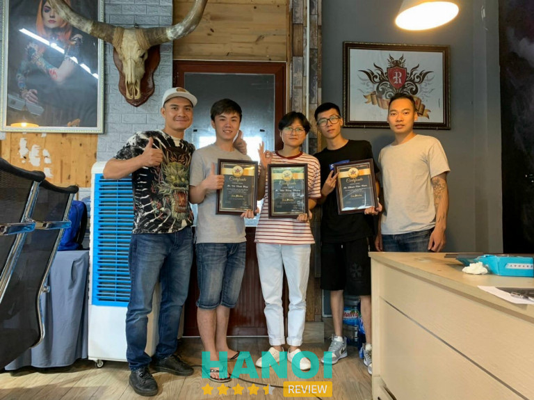
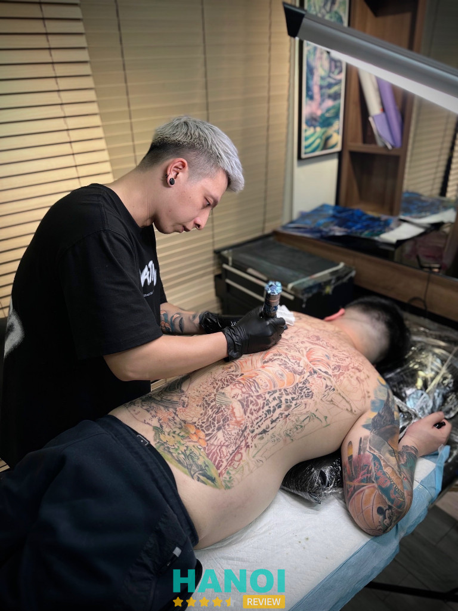
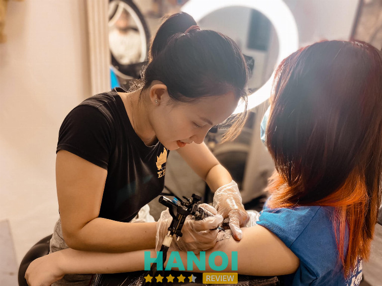

10 Thợ xăm tattoo nổi tiếng ở Hà Nội tay nghề đẹp, lên màu chuẩn
Trong dòng chảy nghệ thuật đô thị sôi động của Hà Nội, hình xăm không chỉ là những nét mực thông thường mà còn là dấu ấn cá nhân, mang đậm câu chuyện và ý nghĩa riêng của mỗi người. Nếu bạn muốn tìm một thợ xăm tattoo nổi tiếng ở Hà Nội để “ghi dấu” một tác phẩm thực sự có ý nghĩa, thì những cái tên được cộng đồng tin tưởng dưới đây sẽ là lựa chọn không thể bỏ qua.
Top 10 thợ xăm tattoo nổi tiếng tại Hà Nội được đánh giá cao về kỹ thuật và thẩm mỹ
Việc lựa chọn thợ xăm uy tín giữa thị trường sôi động tại Hà Nội chưa bao giờ là điều dễ dàng. Danh sách các thợ xăm tattoo nổi tiếng dưới đây được tuyển chọn dựa trên kỹ năng chuyên môn, phong cách cá nhân rõ nét và mức độ hài lòng từ khách hàng qua thời gian.
Zin Lee
Trong cộng đồng xăm hình nghệ thuật, Zin Lee tại Inkonic Studio là một cái tên không còn xa lạ. Với hơn 368.000 lượt theo dõi trên Facebook, cô là thợ xăm tattoo nổi tiếng tại Hà Nội được đánh giá cao về kỹ thuật, thẩm mỹ và khả năng sáng tạo vượt khuôn mẫu.
Zin Lee (tên thật là Kim Thanh Bùi) theo đuổi phong cách Black work, nổi bật với các đường nét mềm mại, tinh tế và giàu cảm xúc. Mỗi tác phẩm của cô như một mảng nghệ thuật được vẽ nên bằng cảm nhận cá nhân và sự am hiểu sâu sắc về hình thể. Không chỉ vậy, cô còn được biết đến với khả năng xăm che sẹo (cover-up) độc đáo, giúp nhiều người lấy lại sự tự tin trên chính làn da của mình.
Lý do Zin Lee trở thành lựa chọn của nhiều tín đồ yêu xăm:
- Phong cách riêng biệt: Black work nhưng không nặng nề, ngược lại rất nhẹ nhàng, hài hòa và mang tính kể chuyện.
- Kỹ thuật cao: Nét đi mực chuẩn xác, tạo độ chuyển sắc uyển chuyển và giữ mực bền lâu.
- Chuyên cover-up sẹo: Những vùng da từng tổn thương được “tái sinh” đầy nghệ thuật.
- Tư vấn kỹ lưỡng: Luôn lắng nghe mong muốn của khách và điều chỉnh thiết kế phù hợp nhất.
- Không gian làm việc chuyên nghiệp: Inkonic Studio nổi bật với sự chỉn chu, sạch sẽ và đảm bảo vệ sinh tuyệt đối.
Zin Lee là lựa chọn lý tưởng nếu bạn đang tìm một người thợ không chỉ giỏi kỹ thuật mà còn giàu cảm xúc và thẩm mỹ. Đừng ngần ngại liên hệ Inkonic Studio để đặt lịch với Zin Lee – thợ xăm tattoo nổi tiếng tại Hà Nội – và mang về một tác phẩm xứng đáng với làn da của bạn.
Thông tin liên hệ:
- Địa chỉ: 26 Hàng Buồm, Hoàn Kiếm, Hà Nội
- Điện thoại: 0866 201302
- Email: Inkonic148@gmail.com
- Website: inkonictattoo.com
- Facebook: fb.com/Inkonic.studio hoặc fb.com/LeeZin0411
Quang Phạm
Trong cộng đồng nghệ thuật xăm hình, Quang Phạm (tên thật là Phạm Đình Quang) được biết đến như một thợ xăm tattoo nổi tiếng tại Hà Nội, với kỹ thuật đi kim tinh xảo và tư duy nghệ thuật sắc sảo. Anh hiện có hơn 161.000 người theo dõi trên Facebook, minh chứng cho sức hút và uy tín của mình trong giới.
Chỉ trong vài năm, Quang Phạm đã chinh phục 11 giải thưởng lớn tại các sự kiện quốc tế, trong đó nổi bật là giải nhất hạng mục Best Of Day tại Gods Of Ink Tattoo Convention 2025 – một trong những giải xăm uy tín nhất toàn cầu. Anh còn được mời làm giám khảo tại 3 cuộc thi tattoo thế giới – điều không phải nghệ sĩ nào cũng đạt được.
Vì sao Quang Phạm được đánh giá cao:
- Kỹ thuật xăm chuẩn, giảm tối đa cảm giác đau
- Thiết kế hình xăm cá nhân hóa, giàu tính biểu cảm
- Phong cách đa dạng: từ hình truyền thống đến chân dung 3D
- Kinh nghiệm thi đấu và giám khảo tại các cuộc thi quốc tế
- Đại sứ thương hiệu của Kwadron (kim xăm – Phần Lan) và World Famous Ink (mực xăm – Mỹ)
Ngoài tay nghề cao, Quang Phạm còn nổi bật nhờ quy trình làm việc chuyên nghiệp, tư vấn tận tình và chế độ chăm sóc sau xăm cẩn thận. Chính điều đó giúp anh duy trì được lượng khách hàng lớn và trung thành.
Nếu bạn đang tìm một thợ xăm tattoo nổi tiếng tại Hà Nội có phong cách riêng và được cộng đồng quốc tế công nhận, đừng bỏ qua Quang Phạm. Hãy theo dõi trang Facebook của anh và đặt lịch để được tư vấn trực tiếp từ nghệ sĩ đẳng cấp này.
Thông tin liên hệ:
- Địa chỉ: 24 ngõ 92 Nguyễn Lương Bằng, Đống Đa, Hà Nội
- Điện thoại: 0849 868 888
- Facebook: fb.com/QuangPham1610
Triệu Việt Anh
Nếu bạn đang tìm kiếm một thợ xăm tattoo nổi tiếng tại Hà Nội để gửi gắm hình xăm ý nghĩa, thì cái tên Triệu Việt Anh chắc chắn là lựa chọn không thể bỏ qua. Anh là người sáng lập và điều hành Rio Tattoo Studio – một trong những địa chỉ xăm hình uy tín, thu hút hàng ngàn khách hàng mỗi năm.

Triệu Việt Anh sở hữu hơn 15 năm kinh nghiệm trong nghề, từng phục vụ hàng trăm nghìn khách hàng và đào tạo hơn 400 học viên chuyên nghiệp. Không chỉ được giới trẻ yêu thích, anh còn là người đứng sau những hình xăm độc đáo của nhiều nghệ sĩ nổi tiếng như MC Quang Minh hay ca sĩ Lâm Chi Khanh. Mỗi tác phẩm của anh đều mang đậm dấu ấn cá nhân, kết hợp hài hòa giữa kỹ thuật hiện đại và cảm quan nghệ thuật.
Những điểm nổi bật tại Rio Tattoo Studio:
- Không gian hiện đại, vệ sinh khép kín theo chuẩn quốc tế
- Đội ngũ thợ xăm giàu kinh nghiệm, từng đạt giải trong và ngoài nước
- Mực xăm nhập khẩu an toàn, bảo hành lâu dài
- Phục vụ tận tâm, tư vấn chi tiết trước khi thực hiện
- Nhận đào tạo học viên từ cơ bản đến nâng cao
Với phong cách làm việc chuyên nghiệp và luôn đặt chất lượng lên hàng đầu, Triệu Việt Anh đã góp phần đưa nghệ thuật xăm hình ở Việt Nam tiến gần hơn với chuẩn mực quốc tế. Những ai từng làm việc cùng anh đều đánh giá cao về sự cầu toàn và tận tâm với nghề.
Nếu bạn đang tìm một thợ xăm tattoo nổi tiếng tại Hà Nội, đừng ngần ngại đến Rio Tattoo Studio để được trực tiếp gặp gỡ và tư vấn cùng Triệu Việt Anh – người nghệ sĩ xăm hình đầy tâm huyết và sáng tạo.
Thông tin liên hệ:
- Địa chỉ: 217 Thụy Khuê, Tây Hồ, Hà Nội
- Điện thoại: 0932 330 333
- Facebook: fb.com/vietanh.trieu.357
Vương Duy Chung
Khi nhắc đến những thợ xăm tattoo nổi tiếng tại Hà Nội, Vương Duy Chung luôn là cái tên được cộng đồng yêu nghệ thuật xăm hình nhắc đến với sự kính trọng. Với hơn một thập kỷ gắn bó cùng nghề, anh không chỉ nổi bật nhờ kỹ thuật điêu luyện mà còn bởi dấu ấn cá nhân độc đáo trong từng tác phẩm.
Vương Duy Chung chuyên về xăm chân dung – một thể loại đòi hỏi độ chính xác, chiều sâu cảm xúc và kỹ thuật vững vàng. Anh từng giành giải Nhất hạng mục Châu Âu tại Triển lãm Xăm hình Việt Nam năm 2016 và giải Best of the Day năm 2017, khẳng định vị thế trong giới chuyên môn. Không dừng lại ở việc tạo ra tác phẩm, anh còn là người truyền cảm hứng cho thế hệ trẻ, đã đào tạo hơn 500 học viên từ nhiều quốc gia.
Một số điểm nổi bật trong sự nghiệp của Vương Duy Chung:
- Chuyên môn: Xăm chân dung chân thực, giàu cảm xúc
- Thành tích: 2 giải thưởng lớn tại Vietnam Tattoo Convention
- Kinh nghiệm giảng dạy quốc tế với học viên từ Mỹ, Pháp, Úc, Hàn Quốc…
- Phong cách: Tôn trọng cảm xúc cá nhân của khách hàng, tư vấn kỹ lưỡng trước khi xăm
Không chỉ là một thợ xăm tattoo nổi tiếng tại Hà Nội, Vương Duy Chung còn là biểu tượng của sự bền bỉ, đổi mới và chuẩn mực trong nghệ thuật xăm hình. Anh không ngừng học hỏi, cập nhật xu hướng mới để nâng cao chất lượng từng tác phẩm.
Nếu bạn đang tìm kiếm một nghệ sĩ xăm hình đẳng cấp, có tâm và có tầm, hãy cân nhắc liên hệ với Vương Duy Chung để được tư vấn và sở hữu hình xăm mang dấu ấn riêng.
Thông tin liên hệ:
- Địa chỉ: Số 357 Nguyễn Khang Yên Hòa, Cầu Giấy, Hà Nội
- Điện thoại: 0973 404 363
- Email: vuongduychung85@gmail.com
- Website: titantattoo.vn
- Facebook: fb.com/chung.tato
Tú Đen
Nhắc đến những thợ xăm tattoo nổi tiếng tại Hà Nội, không thể bỏ qua cái tên Tú Đen. Sở hữu hơn 130.000 người theo dõi trên mạng xã hội và là chủ tiệm Tú Xăm với hơn 58.000 lượt thích, Nguyễn Văn Tú (nghệ danh Tú Đen) gây ấn tượng mạnh bởi tài năng cùng phong cách nghệ thuật riêng biệt, nổi bật giữa cộng đồng xăm hình Việt Nam.

Xuất thân từ Đại học Mỹ thuật Công nghiệp Hà Nội, Tú Đen sớm thể hiện năng khiếu hội họa và đam mê nghệ thuật cơ thể. Không chỉ là một thợ xăm, anh còn là người tiên phong trong việc xây dựng hình ảnh chuyên nghiệp cho ngành tattoo tại Việt Nam. Năm 2016, anh giành giải Nhì hạng mục Big Realistic Grey tại Hanoi International Tattoo Convention, và tiếp tục khẳng định vị thế khi đoạt giải Nhất tại Vietnam Tattoo Expo 2018, vượt qua hàng trăm đối thủ quốc tế.
Những điểm nổi bật của Tú Đen:
- Phong cách thiết kế mạnh mẽ, dứt khoát và giàu tính biểu cảm
- Từng được báo chí nước ngoài nhắc đến trong các bài viết về nghệ thuật tattoo châu Á
- Đào tạo nhiều học viên có triển vọng tại cơ sở ở quận Đống Đa, Hà Nội
- Luôn đầu tư công nghệ hiện đại và quy trình đảm bảo an toàn tuyệt đối
Hiện tại, Tú Đen Tattoo không chỉ là nơi tiếp nhận khách hàng đam mê hình xăm nghệ thuật mà còn là môi trường học hỏi cho những bạn trẻ theo nghề. Anh chú trọng phát triển tư duy sáng tạo, kỷ luật trong nghề và truyền cảm hứng cho thế hệ kế tiếp.
Nếu bạn đang tìm một thợ xăm tattoo nổi tiếng tại Hà Nội có tay nghề vững, gu thẩm mỹ sắc sảo và bề dày kinh nghiệm, Tú Đen là cái tên xứng đáng để bạn đặt niềm tin. Hãy liên hệ với Tú Xăm để biến ý tưởng nghệ thuật của bạn thành hiện thực!
Thông tin liên hệ:
- Địa chỉ: 362 La Thành, P. Ô Chợ Dừa, Q. Đống Đa, Hà Nội
- Điện thoại: 0939 110 288
- Facebook: fb.com/den.tu1
Nguyễn Ngọc Anh
Nguyễn Ngọc Anh, thường được biết đến với cái tên Na Bia, là một trong những thợ xăm tattoo nổi tiếng tại Hà Nội, đặc biệt được giới trẻ yêu thích nhờ phong cách sáng tạo và sự tận tâm trong từng tác phẩm. Với hơn 58.000 người theo dõi trên mạng xã hội, cô không chỉ là một nghệ sĩ mà còn là người truyền cảm hứng cho cộng đồng yêu xăm hình.
Na Bia là một trong số ít nữ thợ xăm tattoo nổi tiếng ở Hà Nội sở hữu phong cách riêng và kỹ năng chuyên sâu sau nhiều năm làm nghề. Mỗi tác phẩm do cô thực hiện đều mang dấu ấn cá nhân rõ nét, chú trọng vào cảm xúc, đường nét và câu chuyện của khách hàng. Cô đặc biệt yêu thích các thiết kế có yếu tố nghệ thuật, thể hiện cái tôi và sự tinh tế trong từng chi tiết.
Tại Na Bia Tattoo, khách hàng được phục vụ theo hình thức private – chỉ tiếp khách đã hẹn trước. Điều này không chỉ giúp đảm bảo tính riêng tư, mà còn tạo điều kiện để Na Bia tập trung toàn lực vào từng buổi xăm. Một số điểm nổi bật tại studio:
- Môi trường làm việc sạch sẽ, riêng tư
- Tư vấn kỹ lưỡng trước khi lên thiết kế
- Chất lượng mực và dụng cụ đạt chuẩn an toàn
- Lịch hẹn rõ ràng, hạn chế tối đa việc chờ đợi
Nếu bạn đang tìm kiếm một thợ xăm tattoo nổi tiếng tại Hà Nội với tay nghề vững, gu thẩm mỹ tốt và dịch vụ chuyên nghiệp, Nguyễn Ngọc Anh (Na Bia) là một lựa chọn đáng cân nhắc. Hãy đặt lịch trước để được tư vấn và trải nghiệm không gian riêng biệt tại Na Bia Tattoo.
Thông tin liên hệ:
- Địa chỉ: 89 ngõ 78 Đại La, Hai Bà Trưng, Hà Nội
- Điện thoại: 0366 262 644
- Email: rainykiss88@yahoo.com
- Facebook: fb.com/nabia88
Nguyễn Sơn
Là một trong những thợ xăm tattoo nổi tiếng tại Hà Nội, Tattoo Artist Nguyễn Sơn (tên thật là Nguyễn Đức Sơn) đã tạo dựng vị thế vững chắc trong giới nghệ thuật xăm hình. Với xuất thân từ Trường Đại học Mỹ thuật Công nghiệp Hà Nội, anh không chỉ sở hữu kỹ năng chuyên môn mà còn có tư duy thẩm mỹ vượt trội – nền tảng quan trọng cho sự nghiệp xăm nghệ thuật chuyên sâu.
Bắt đầu hành nghề từ năm 2008, Nguyễn Sơn đã trải qua hơn 15 năm tích lũy kinh nghiệm và hoàn thiện kỹ năng trong đa dạng phong cách xăm: từ Oldschool cổ điển, Newschool hiện đại, Irezumi Nhật Bản đến Neo truyền cảm hứng. Anh còn nổi bật nhờ sự am hiểu sâu sắc về phong thủy, văn hóa, lịch sử và tôn giáo, giúp mỗi tác phẩm không chỉ đẹp mà còn mang ý nghĩa cá nhân sâu sắc đối với khách hàng.
Một số dấu ấn nổi bật trong sự nghiệp Tattoo Artist Nguyễn Sơn có thể kể đến:
- Phục vụ hơn 10.000 lượt khách trong và ngoài nước.
- Được đánh giá là một trong Top 10 thợ xăm đẹp nhất Hà Nội.
- Có khả năng thiết kế hình xăm tùy chỉnh 100% theo yêu cầu và ý nghĩa của khách.
- Kết hợp nghệ thuật thị giác với yếu tố tâm linh trong từng đường kim, nét mực.
Với tay nghề vững vàng và cái tâm của người làm nghệ thuật, Nguyễn Sơn là lựa chọn hàng đầu cho những ai đang tìm kiếm một thợ xăm tattoo nổi tiếng tại Hà Nội, uy tín và có chiều sâu. Nếu bạn đang ấp ủ một hình xăm ý nghĩa, hãy liên hệ với Nguyễn Sơn để biến ý tưởng thành tác phẩm nghệ thuật độc bản.
Thông tin liên hệ:
- Địa chỉ: 48 Nam Ngư, Hoàn Kiếm, Hà Nội
- Điện thoại: 0377 616 886
- Email: mrtattoo.xamnghethuat@gmail.com
- Website: xamnghethuathanoi.com
- Facebook: fb.com/XamNgheThuatHaNoi
Sói Nguyễn
Sói Nguyễn, tên thật là Nguyễn Đức Hoàng, sinh năm 1991, là một trong những thợ xăm tattoo nổi tiếng tại Hà Nội hiện nay. Anh là người sáng lập Electric Tattoo Vietnam – studio có hơn 52.000 lượt thích, nơi quy tụ nhiều nghệ sĩ tài năng và đón nhận hàng nghìn khách hàng mỗi năm.
Phong cách của Sói Nguyễn mang đậm dấu ấn hiện thực (Realistic), với kỹ thuật điêu luyện và cảm xúc thể hiện rõ qua từng tác phẩm. Điểm nhấn đáng chú ý trong sự nghiệp của anh là giải nhất hạng mục Best Realistic tại cuộc thi Taiwan I Love Tattoo, nơi anh đã vượt qua hơn 300 nghệ sĩ đến từ khắp nơi trên thế giới bằng bức hình full back Narcos ấn tượng.
Điểm nổi bật về Sói Nguyễn:
- Là người sáng lập Electric Tattoo Vietnam – một trong những studio uy tín tại Hà Nội
- Có hơn 13.000 người theo dõi cá nhân và 52.000 lượt thích trang studio
- Đạt giải nhất quốc tế với phong cách Realistic tại cuộc thi Taiwan I Love Tattoo
- Từng đào tạo và truyền cảm hứng cho nhiều nghệ sĩ trẻ yêu nghề xăm
- Luôn đề cao tính an toàn, sáng tạo và thẩm mỹ trong từng tác phẩm
Không chỉ là nghệ sĩ, Sói Nguyễn còn là biểu tượng của sự kiên định theo đuổi đam mê. Anh góp phần không nhỏ trong việc nâng tầm nghệ thuật xăm hình tại Việt Nam ra tầm quốc tế.
Nếu bạn đang tìm kiếm một thợ xăm tattoo nổi tiếng tại Hà Nội sở hữu kỹ thuật điêu luyện, tư duy sáng tạo và phong cách nghệ thuật riêng biệt, Sói Nguyễn là lựa chọn đáng cân nhắc. Đừng ngần ngại liên hệ để trải nghiệm một tác phẩm xăm không chỉ đẹp mà còn mang đậm dấu ấn cá nhân.
Thông tin liên hệ:
- Địa chỉ: B14 Phạm Ngọc Thạch, Quận Đống Đa, Hà Nội
- Điện thoại: 0943 913 174
- Email: electrictattoo.vn@gmail.com
- Facebook: fb.com/soinguyen177
Black Bear Thành Duy
Trong giới tattoo tại Hà Nội, Thành Duy (hay còn được biết đến với tên Black Bear Phan Thành Duy) là một trong những thợ xăm tattoo nổi tiếng tại Hà Nội, gây ấn tượng mạnh bởi cá tính nghệ thuật độc đáo. Xuất thân từ lĩnh vực Graffiti, anh sở hữu nền tảng mỹ thuật vững chắc và tư duy thị giác khác biệt, giúp mỗi hình xăm đều mang màu sắc riêng biệt và chiều sâu nghệ thuật.
Với hơn 10 năm gắn bó cùng nghề, Thành Duy đã tạo dấu ấn bằng các tác phẩm có bố cục lạ, đường nét phóng khoáng và giàu cảm xúc. Phong cách xăm của anh không chỉ dừng lại ở kỹ thuật, mà còn kết hợp giữa nghệ thuật đường phố và mỹ thuật tạo hình, đưa tattoo lên tầm cao mới – nơi người ta không chỉ nhìn mà còn cảm nhận được câu chuyện phía sau mỗi hình xăm.
Một số điểm nổi bật trong hành trình của Thành Duy:
- Được biết đến với khả năng thiết kế hình xăm độc bản theo yêu cầu cá nhân
- Phong cách đa dạng: từ Realism, Blackwork, tới Abstract hiện đại
- Từng hợp tác với nhiều nghệ sĩ graffiti và nghệ sĩ thị giác trong các dự án nghệ thuật đường phố
- Học viên theo học đông đảo, nhiều người đã trở thành tattoo artist chuyên nghiệp
- Có studio riêng tại Hà Nội, không gian nghệ thuật và sạch sẽ đạt chuẩn
Thành Duy không chỉ là thợ xăm tattoo nổi tiếng ở Hà Nội đơn thuần, mà còn là nghệ sĩ truyền cảm hứng trong cộng đồng yêu tattoo. Anh liên tục đổi mới, thử nghiệm chất liệu và kỹ thuật, đưa ra những xu hướng mới mẻ trong làng xăm.
Nếu bạn đang tìm kiếm thợ xăm tattoo nổi tiếng tại Hà Nội để hiện thực hóa một hình xăm cá nhân đầy ý nghĩa, hãy cân nhắc Thành Duy – người có thể biến ý tưởng của bạn thành tác phẩm nghệ thuật thực thụ.
Thông tin liên hệ:
- Địa chỉ: Số 6 Yên Bái 1, P. Phố Huế, Q. Hai Ba Trưng, Hà Nội
- Điện thoại: 0829 999 179
- Email: blackbeartattoovn@gmail.com
- Facebook: fb.com/mr.thanhduy
Huong Thu Nguyen
Trong cộng đồng nghệ thuật xăm Hà Nội, Huong Thu Nguyen là cái tên không còn xa lạ. Là một thợ xăm tattoo nổi tiếng tại Hà Nội, cô gây ấn tượng mạnh bởi kỹ thuật sắc sảo, gu thẩm mỹ hiện đại và khả năng thể hiện cá tính qua từng nét mực. Với hơn 6,6 nghìn người theo dõi trên mạng xã hội, cô không chỉ là nghệ sĩ mà còn là nguồn cảm hứng cho những ai yêu thích nghệ thuật cơ thể.

Huong Thu Nguyen là một thợ xăm tattoo nổi tiếng ở Hà Nội, hiện đang làm việc tại Glossy Ink – một trong những studio uy tín tại Hà Nội. Mỗi tác phẩm của cô đều thể hiện sự tỉ mỉ trong đường nét, tinh tế trong phối màu, đồng thời mang đậm dấu ấn cá nhân. Phong cách xăm của cô phù hợp với nhiều đối tượng khách hàng, từ những người thích hình xăm nhỏ nhẹ, nữ tính cho đến những thiết kế nghệ thuật đậm chất cá nhân.
Một số điểm nổi bật trong phong cách làm việc của Huong Thu Nguyen:
- Luôn lắng nghe và tư vấn kỹ lưỡng theo nhu cầu khách hàng
- Thiết kế hình xăm độc quyền, không trùng lặp
- Sử dụng mực xăm chất lượng cao, đảm bảo an toàn
- Không gian làm việc sạch sẽ, chuyên nghiệp tại Glossy Ink
- Thường xuyên cập nhật xu hướng xăm mới
Sự tâm huyết và chỉn chu của Huong Thu Nguyen trong từng sản phẩm giúp cô giữ vững vị trí trong giới thợ xăm tattoo nổi tiếng tại Hà Nội. Dù là người mới hay đã từng xăm, bạn đều sẽ tìm được sự hài lòng khi đến với cô.
Nếu bạn đang tìm kiếm một hình xăm vừa đẹp vừa ý nghĩa, đừng ngần ngại liên hệ Huong Thu Nguyen tại Glossy Ink để bắt đầu hành trình nghệ thuật của riêng mình.
Thông tin liên hệ:
- Địa chỉ: Số 9 Ngách 18 Ngõ 101 Hào Nam, Q. Đống Đa, Hà Nội
- Điện thoại: 0986 594 592
- Email: Glossyink22@gmail.com
- Facebook: fb.com/mup.huong.9
Tiêu chí chọn thợ xăm tattoo nổi tiếng ở Hà Nội đảm bảo an toàn
Một hình xăm đẹp không chỉ đến từ ý tưởng mà còn phụ thuộc vào người thực hiện. Để chọn đúng thợ xăm tattoo nổi tiếng ở Hà Nội, bạn nên cân nhắc các yếu tố sau:
- Tay nghề và kinh nghiệm: Ưu tiên những thợ có từ 3 năm kinh nghiệm trở lên và portfolio rõ ràng. Họ thường thể hiện tốt độ sắc nét, đường nét và khả năng xử lý nhiều thể loại hình xăm.
- Cơ sở vật chất và vệ sinh: Studio phải sạch, có không gian riêng, mực và kim luôn mới. Quy trình vô trùng nghiêm ngặt là điều bắt buộc để đảm bảo an toàn.
- Phong cách thiết kế phù hợp: Chọn thợ có thế mạnh đúng với phong cách bạn muốn. Không ai giỏi tất cả nên cần xem kỹ các tác phẩm trước đó để đánh giá sự tương thích.
- Tư vấn và thái độ: Thợ xăm chuyên nghiệp luôn trao đổi kỹ trước khi thực hiện và sẵn sàng góp ý nếu thiết kế chưa ổn. Họ không làm ẩu hay chạy theo số lượng.
- Phản hồi khách hàng: Đánh giá thực tế từ khách cũ rất đáng tin cậy. Bạn nên xem hình ảnh trước – sau, các bình luận trên fanpage hoặc hội nhóm xăm uy tín.
Một hình xăm đẹp và bền lâu đòi hỏi nhiều hơn là ý tưởng tốt. Tay nghề vững, thiết bị đảm bảo vệ sinh và sự ăn ý giữa bạn với thợ là những yếu tố quyết định. Hy vọng danh sách thợ xăm tattoo nổi tiếng ở Hà Nội này sẽ giúp bạn tìm được nghệ sĩ ưng ý để gửi gắm tác phẩm nghệ thuật trên cơ thể mình. Bạn đã sẵn sàng để sở hữu một hình xăm kể câu chuyện của riêng mình chưa?
Có thể bạn quan tâm
- 12 Địa chỉ xăm hình tại Hà Nội đẹp, an toàn, giá tốt nhất
- 5 Địa chỉ xóa hình xăm tại Hà Nội an toàn, uy tín nhất
- 5 Địa chỉ xỏ khuyên tai, mũi, rốn tại Hà Nội đẹp, an toàn
- 10 Quán bida tại Hà Nội chất lượng, đẳng cấp
DOANH NGHIỆP: Đăng tải thông tin MIỄN PHÍ.
Tin đọc nhiều


10 Địa chỉ nhấn mí, bấm mí mắt tại Hà Nội uy tín hàng đầu
Với nhu cầu thẩm mỹ ngày càng tăng cao, các cơ sở làm đẹp đang không ngừng hoàn thiện chất lượng dịch vụ, đảm bảo...
5 Địa chỉ Massage Body trị liệu tại quận Ba Đình dịch vụ tốt, xóa...
Trong một cuộc sống bận rộn và tấp nập như ở Hà Nội, việc tìm đến một địa chỉ massage body trị liệu uy tín...

7 Hiệu thuốc ở Q. Cầu Giấy hiệu quả, giá cả hợp lý
Hiệu thuốc ở quận Cầu Giấy không chỉ được đánh giá cao về nguồn thuốc đảm bảo, chính hãng mà còn nổi bật với thái...

10 Phòng tập Gym ở Q. Đống Đa có chất lượng tốt và dịch vụ...
Phòng tập gym ở Quận Đống Đa ngày càng được nhiều người lựa chọn nhờ tiện nghi hiện đại và không gian tập luyện thoải...

Trở thành người đầu tiên bình luận cho bài viết này!